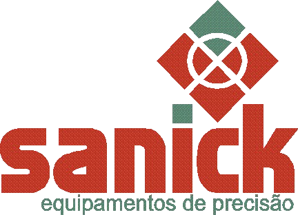
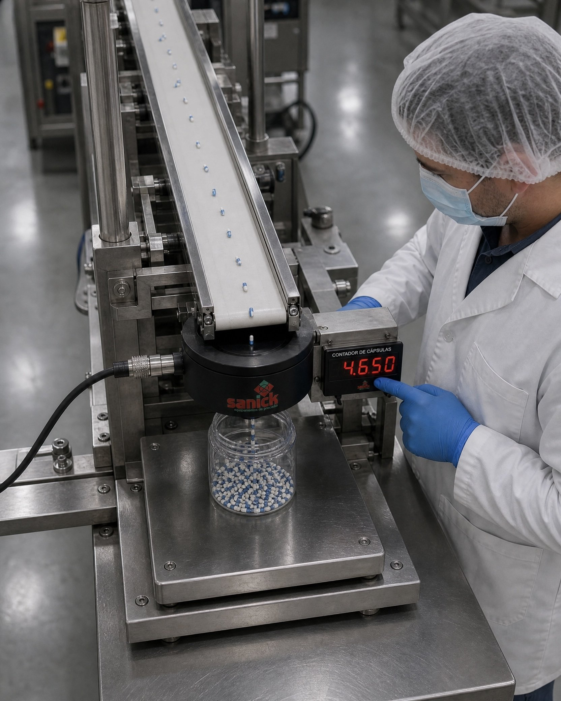
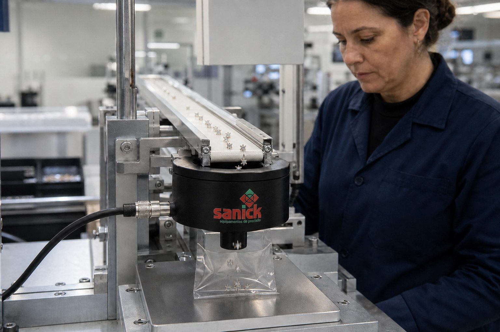
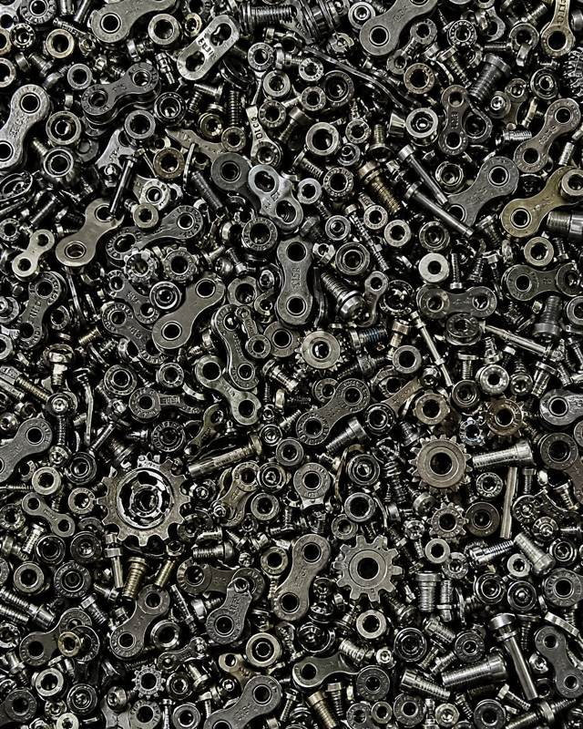
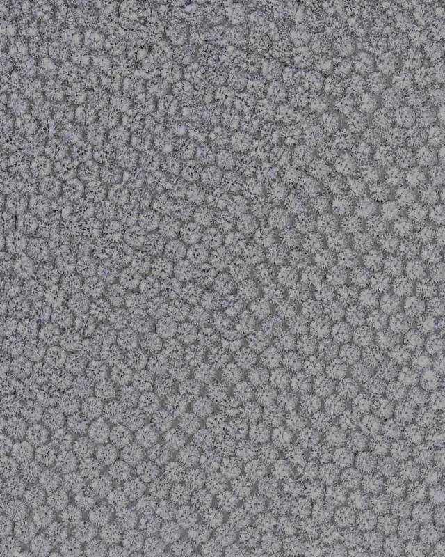
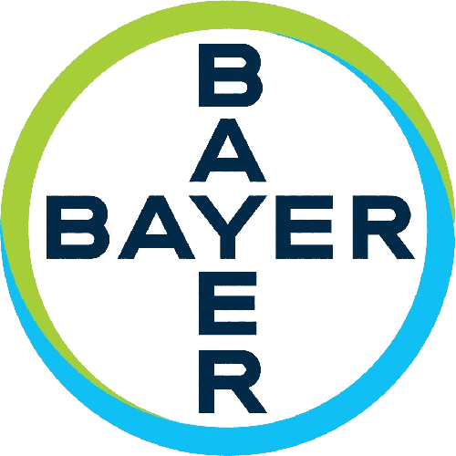
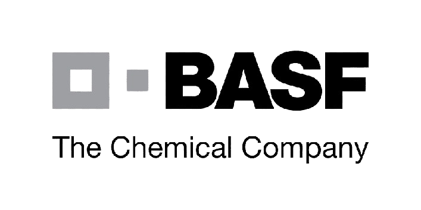
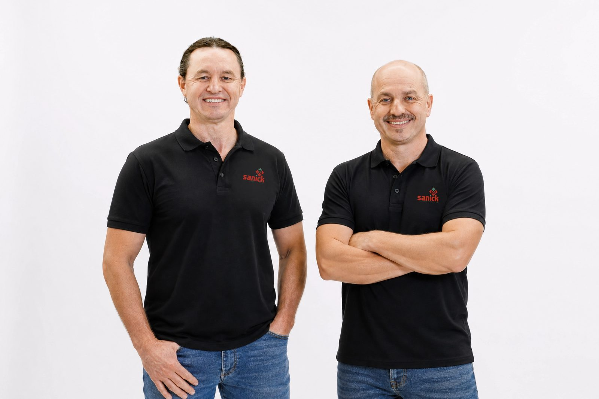
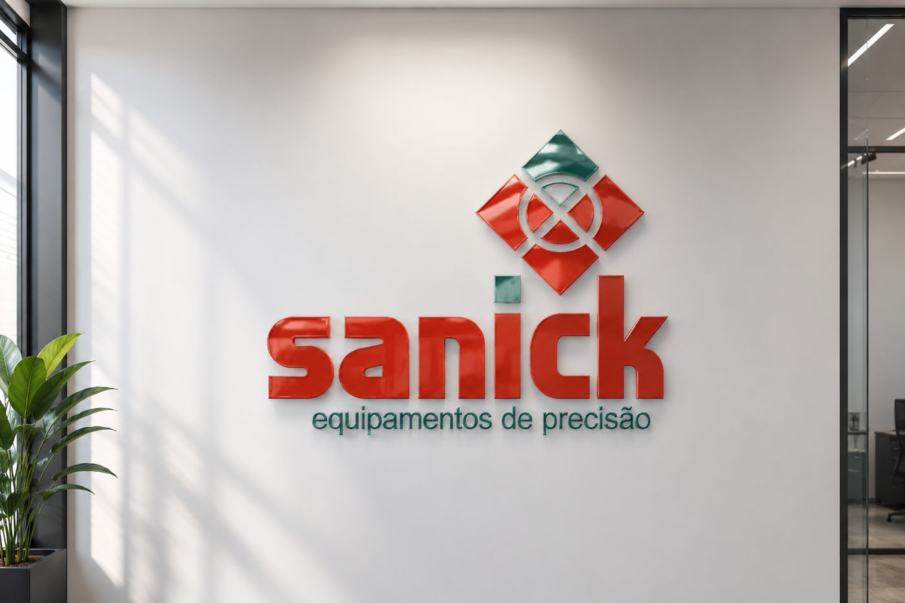

Conte com a Sanick

Tecnologia industrial brasileira
20 anos de P&D e algoritmos proprietários de IA, validados em 6 segmentos industriais — do parafuso à cápsula farmacêutica.
O custo de contar errado
Enquanto outros métodos aceitam o erro, o Intelicount foi projetado para não aceitar.
Exemplo baseado em produção de ~139.000 peças/mês, R$ 1,50 por peça e erro de 2%. Os valores variam conforme a sua operação — calcule o cenário real da sua produção na calculadora de ROI.
Calcular o ROI da minha produçãoPor que Sanick
Grandes players têm tecnologia. Concorrentes baratos, nem sempre. A Sanick combina os quatro.
R$ 2.400 contra R$ 50.000 das alternativas — mesma classe técnica, fração do investimento.
Calibração adaptativa automática. O sensor se ajusta sozinho — sua produção não para.
Validado em 19 unidades operacionais, 6 segmentos industriais, 3 continentes.
Suporte técnico direto, com retorno em até 24 horas.
Prova social
Depoimentos de clientes sobre precisão, suporte e economia real com o Intelicount e outras soluções da Sanick.
Há três anos adquirimos o contador eletrônico de sementes da Sanick, que tem contribuído significativamente para a agilidade da rotina do nosso laboratório, especialmente na determinação do Peso de Mil Sementes. O equipamento é fácil de usar e conta com um software intuitivo, trazendo mais praticidade e confiabilidade aos nossos resultados.
Os contadores eletrônicos da Sanick têm ajudado bastante no nosso dia a dia. São práticos, precisos e facilitaram muito nossos processos de contagem. Ganhamos agilidade e confiança nos resultados. Além disso, o atendimento da equipe da Sanick é sempre rápido e atencioso. Estamos bem satisfeitos com a parceria!
Trabalhamos com os contadores da Sanick há muitos anos e sempre contamos com equipamentos de alta eficiência, precisão nos resultados e total confiabilidade. O atendimento é um diferencial importante: sempre que precisamos de suporte, conseguimos contato imediato via WhatsApp, com retorno rápido e preciso — a maioria dos problemas é resolvida remotamente, por vídeo.
O equipamento da Sanick é muito bom. Facilitou demais a realização de análises de pós-colheita. Tem um funcionamento extremamente simples, o que facilita o treinamento da mão de obra. É preciso nas determinações e, até o momento, não houve necessidade de nenhum tipo de manutenção. Foi uma aquisição realmente valiosa para nossa Estação de Pesquisa.
Com o contador de sementes da Sanick, ganhamos agilidade e precisão no trabalho de contagem — o equipamento avalia 100 sementes por repetição, e a partir da média dos pesos chegamos ao Peso de Mil Sementes com muito mais assertividade para orientar o produtor no plantio. (fonte)
Depoimentos de clientes reais, extraídos de avaliações públicas no Google e imprensa regional.
Diagnóstico gratuito
Responda 5 perguntas rápidas sobre a sua linha. Nosso time técnico devolve uma análise com base no seu volume real de produção.
Prefere falar agora? Chame no WhatsApp
Soluções por segmento
Seis segmentos validados, seis formas diferentes de perder dinheiro com contagem imprecisa — e uma única solução para todas.
Sementes e grãos
Perda de grãos no armazenamento não aparece na planilha — só no fim do mês, no prejuízo.
Essa é a minha dor
Correntes, engrenagens e componentes
Divergência de estoque em peças pequenas trava a linha de montagem e atrasa a expedição.
Essa é a minha dorPorcas, parafusos e fixadores
Um parafuso a menos na caixa vira devolução, nota de crédito e cliente insatisfeito.
Essa é a minha dorImplantes e peças pequenas
Nesse segmento, um erro de contagem não é só prejuízo — é um lote inteiro sob suspeita.
Essa é a minha dor
Gemas, pedras e joias
Quando cada unidade tem alto valor, contar errado custa muito mais do que parece.
Essa é a minha dorPesquisa, ensino e laboratório
Pesquisa de precisão exige instrumentação confiável — não estimativa visual.
Essa é a minha dorNão encontrou seu setor na lista?Tenho outro tipo de segmento e gostaria de uma consultoria gratuita para saber como resolver o problema de contagem da minha empresa.
Já confiam na Sanick


+60 empresas parceirasConte com a Sanick
Sem call center e sem intermediário: você fala direto com o time técnico da Sanick, com resposta em até 24 horas.
Falar no WhatsAppQuem lidera
Comercial e técnico. Ambição e precisão. Chão de fábrica e visão de futuro — a mesma combinação que define o produto está na origem da empresa.

Fabiano
Direção comercial & estratégia
Responsável pela visão de negócio e relacionamento com o mercado. Conduz a Sanick na leitura de novos segmentos e na construção da proximidade com o cliente que virou marca registrada da empresa.
Adriano
Direção técnica & P&D
À frente do desenvolvimento de produto e da engenharia aplicada. É dele a obsessão por precisão que fez da Sanick uma empresa capaz de validar 99,9% de exatidão em ambientes industriais severos.

Essência da marca
Em quatro palavras, a nossa essência resume o racional — 99,9% de precisão — e o emocional: a tranquilidade de quem não precisa conferir porque pode confiar.